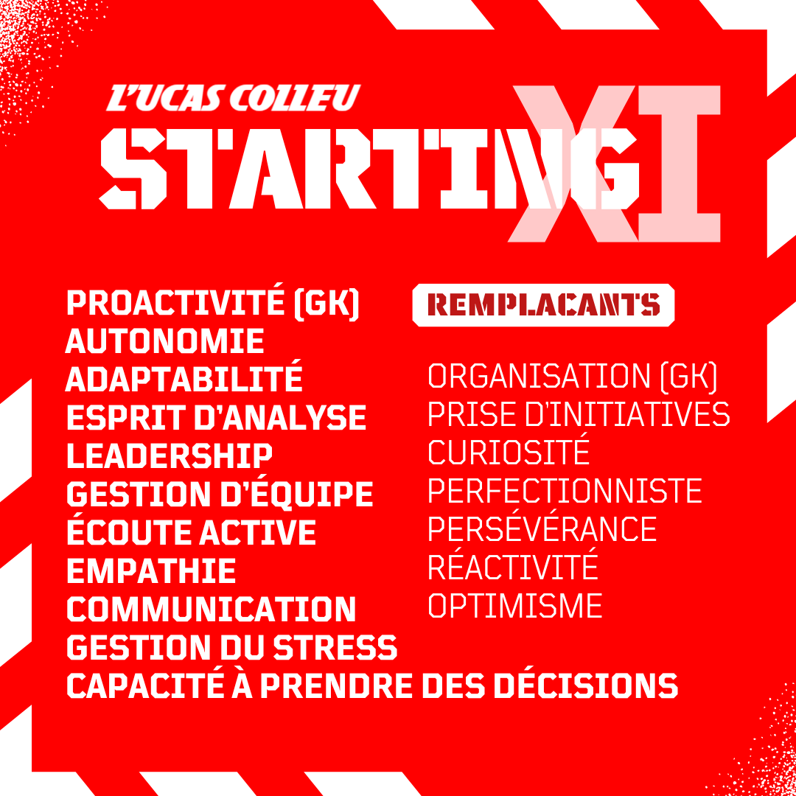

Sport, Compétences, profil
Hard et Soft Skills
 Soft skills : un leader polyvalent et engagé
Si ses compétences techniques sont indéniables, ce qui distingue vraiment Lucas, c’est sa capacité à combiner son savoir-faire avec des soft skills essentiels à son rôle. Leader naturel, il a rapidement pris en main la gestion de projets marketing et la coordination d’équipes. Sa capacité à travailler de manière autonome et à prendre des initiatives l’a mené à orchestrer des campagnes multicanaux ambitieuses, toujours avec une vision claire des objectifs à atteindre.
Le sens de l’analyse de Lucas est un de ses grands atouts. Il est capable de décortiquer les chiffres pour orienter la stratégie, mais aussi de détecter des leviers de croissance là où d’autres pourraient passer à côté. Sa rigueur et son perfectionnisme sont les garants de la qualité de ses réalisations, qu’il s’agisse d’une campagne marketing ou d’un événement comme le "Blitz" organisé avec Milwaukee TTI à l’agence de Rennes.
Ce qui fait également la force de Lucas, c’est son esprit d’équipe. Son aisance à collaborer avec des partenaires externes, comme des fournisseurs ou des prestataires de services, et à encadrer ses collaborateurs au sein des différentes entreprises où il a evolué lui permet de mener à bien des projets ambitieux, tout en favorisant une atmosphère de travail constructive.
Soft skills : un leader polyvalent et engagé
Si ses compétences techniques sont indéniables, ce qui distingue vraiment Lucas, c’est sa capacité à combiner son savoir-faire avec des soft skills essentiels à son rôle. Leader naturel, il a rapidement pris en main la gestion de projets marketing et la coordination d’équipes. Sa capacité à travailler de manière autonome et à prendre des initiatives l’a mené à orchestrer des campagnes multicanaux ambitieuses, toujours avec une vision claire des objectifs à atteindre.
Le sens de l’analyse de Lucas est un de ses grands atouts. Il est capable de décortiquer les chiffres pour orienter la stratégie, mais aussi de détecter des leviers de croissance là où d’autres pourraient passer à côté. Sa rigueur et son perfectionnisme sont les garants de la qualité de ses réalisations, qu’il s’agisse d’une campagne marketing ou d’un événement comme le "Blitz" organisé avec Milwaukee TTI à l’agence de Rennes.
Ce qui fait également la force de Lucas, c’est son esprit d’équipe. Son aisance à collaborer avec des partenaires externes, comme des fournisseurs ou des prestataires de services, et à encadrer ses collaborateurs au sein des différentes entreprises où il a evolué lui permet de mener à bien des projets ambitieux, tout en favorisant une atmosphère de travail constructive.
